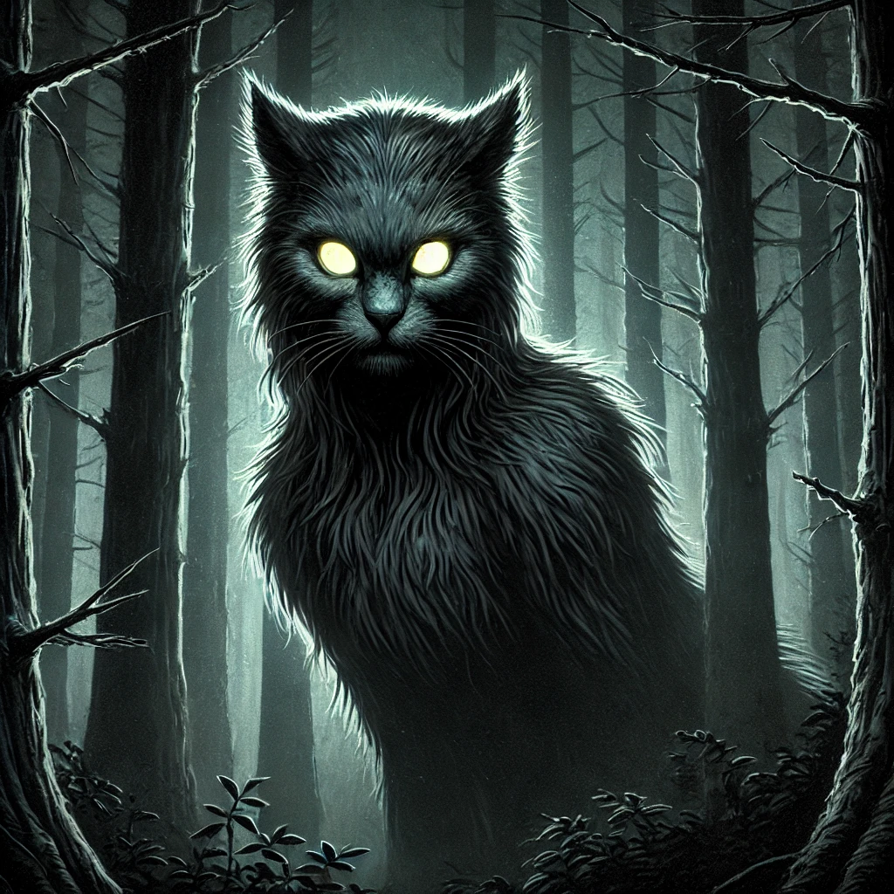

The Wampus Cat is said to be a mystical creature, a cursed woman doomed to roam the woods forever. Her glowing eyes can paralyze her prey, and she strikes fear into the hearts of those who dare enter her territory.
She watches from the shadows, but the truth lies hidden: Decipher this....